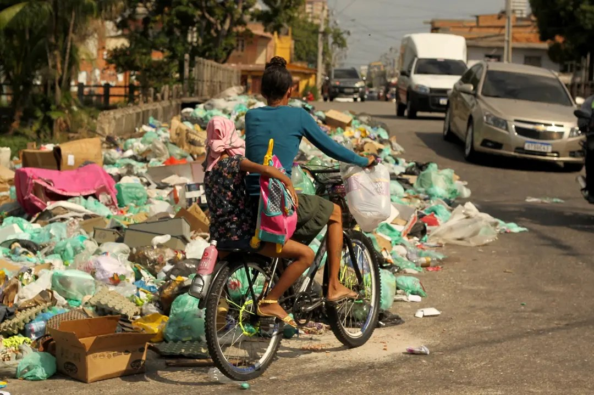
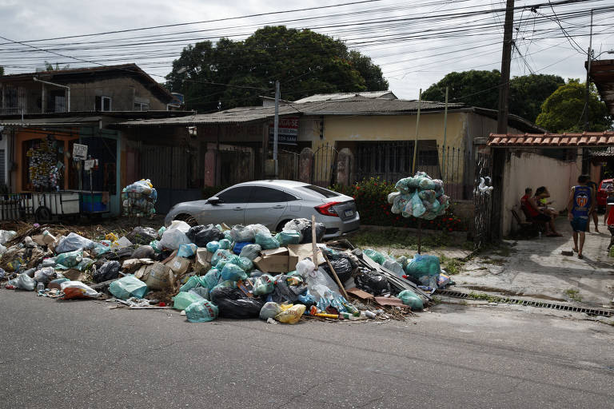

O descarte correto dos resíduos inicia com o acondicionamento adequado e a separação do que é reutilizável, reciclável, lixo comum e resíduo tóxico. De modo geral, o ideal é que papel, alumínio, plástico, vidro e orgânicos sejam separados devidamente nas residências.
Papel, jornais, revistas e caixas em geral.
Produtos descartaveis, embalagens de platico, sacos e garrafas pet.
Latas de aluminio, tampas de garrafa e materias de aço, em geral.
garrafas, frascos de vidro, e materias de vidro em geral.
Conclusão o descarte correto traz inumeros beneficos nao so para a natureza mas tambem para toda uma sociedade que depende dela para sobrebiver.
Como resultado do descarte irregular de lixo, infelizmente hoje em dia é cada vez mais comum vermos pela nossa cidade cenas como esta.
Além de todo o lixo acumulado nas ruas trazerem um odor horrivel, ele tambem pode nos trazer doenças, contaminando o ar e caso o lixo esteja na beira de riachos, rios, etc. o lixo acaba contaminando tanto o solo quanto a água, deixando uma situação horrivel no nosso ecossistema.
